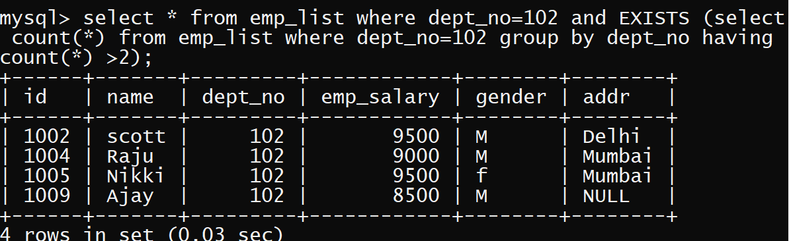
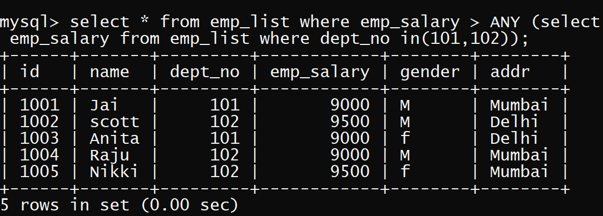
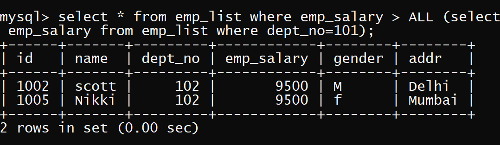

WELCOME TO CODING CRUSH
SPECIAL OPERATORS IN SUBQUERIES
In SQL, there are some special opearators used in Subqueries to perform specific tasks.These operators are :
Exists
This operator is used to check for the existence of values. It produces a boolean result(true/false). It takes a subquery as an argument
and evaluates it to true if the subquery produces any output and false, if the subquery does not produce any output.
List the employee from emp_list table if and only if more than 2 employees are present in department no. 102

Any
The any operator compares the lowest value from the set.
List the employee names from emp_list table, whose salary is greater than the lowest salary of an employee belonging to department no. 101 and 102

All
The All operator compares the highest value from the set.
List the employee names from emp_list table, whose salary is greater than the highest salary of an employee belonging to department no. 101
